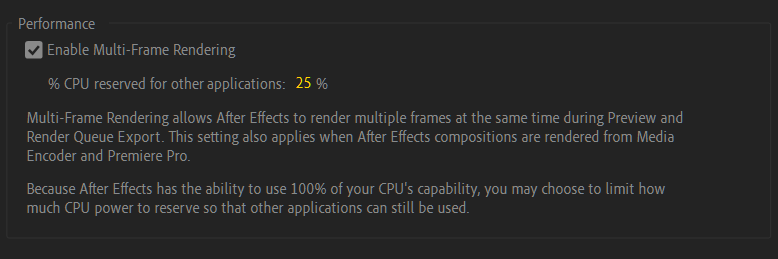
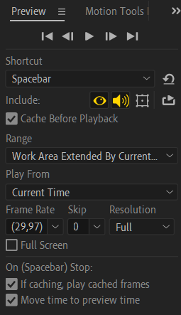
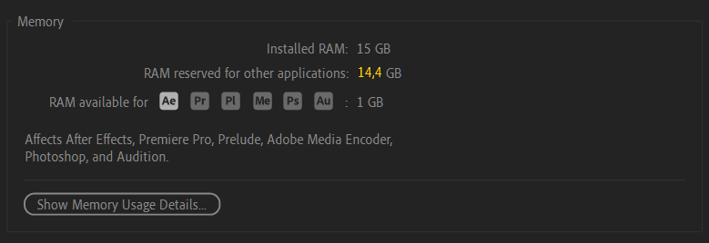

Где скачать шаблоны, программы для творчества, а также плагины к ним?
На главной странице в разделе "Ресурсы" и в
закрепленном сообщении в
AEChat вы всегда
можете найти наши каналы для шаблонов и программ. Например, в
AETemp можно найти звуки, переходы и
шаблоны с помощью хештегов: #звуки #переходы
#шаблоны #плагины. А в
складе стройматериалов вы
можете найти конкретные программы или плагины для Windows, например:
#aftereffects #magicbullet
#borisfx или #twixtor
Не нашёл нужный шаблон, но у меня есть на него ссылка. Как мне его
получить?
Где взять бесплатные стоковые видео для видеороликов?
Существует множество бесплатных видео-стоков онлайн, среди которых
многие предоставляют материалы с лицензией Creative Commons Zero (CC0),
что означает возможность использования их в своих коммерческих проектах,
не указывая авторство. Перед использованием материалов, необходимо
внимательно ознакомиться с условиями использования на каждом конкретном
ресурсе. Ниже перечислены популярные источники видео:
Некоторые ресурсы могут быть заблокированы на территории РФ или других
стран, используйте обходы для
доступа на данные ресурсы.
Где взять бесплатную статичную графику?
У нас есть канал
Design World в Telegram с
полезными материалами для графических редакторов, как Photoshop и
Illustrator. В данном канале есть навигация по каналу для нахождения
всякой всячины, например: #текстуры #шрифты
#кисти #паттерны
Если вам не хватает контента из
Design World, то ниже
предоставлен список различных сайтов с бесплатными графическими
материалами:
С фото и видео разобрались, но я хочу найти бесплатные звуки, где они
находятся?
Если вам не хватает ассортимента из
AETemp, то ниже представлен список
сайтов с бесплатными звуками:
Перед использованием звуков в коммерческих целях - обязательно прочтите
условия использования и лицензии, чтобы не попасть в неприятную
ситуацию.
Хочу влиться в After Effects, с чего мне начать?
Для изучения After Effects с нуля - рекомендуем пройти
курс от Ильи Зернова
для того, чтобы разобраться в интерфейсе программы и не задавать глупых
вопросов уже в начале пути. Если вы уже достаточно уверенный
пользователь программы, но не знаете куда дальше направляться -
рекомендуем посетить каналы
Ben Marriot,
Jake In Motion,
Tutorial View+,
VideoSmile и
AEPlug. Удачи в
начинаниях!
Почему у меня, б%@#ь, лагает After Effects и в чём же причина?
Никто не может назвать конкретную причину этого явления, ведь всё
упирается в то, что вы делаете в вашем проекте: делаете
неоптимизированные "эдиты", собираете простую композицию или пытаетесь
монтировать часовое видео в программе, которая изначально для этого не
презначалась.
Для начала проверьте ваш компьютер на соответствие
системным требованиям
программы, ведь для адекватной работы - необходимо как минимум 16 ГБ ОЗУ
и процессор от Intel минимум 8-го поколения или AMD Ryzer минимум 1000
серии. Но несмотря на это, можно запустить программу и на более слабом
железе, главное соблюдать минимальные требования.
Предположим, что ваша рабочая станция прекрасно соответствует системным
требованиям, но вы не учли тот факт, что вы используете сторонние
плагины. А зачастую именно сторонние плагины и есть проблема ваших
"лагов". Старайтесь не устанавливать в программу всевозможные плагины из
разных источников и не мешать в проекте сторонние эффекты с одинаковой
сутью, но от разных брендов, например BCC Camera Shake и
uni.shake, ведь они могут тормозить из-за разных принципов
просчёта кадра.
Для того, чтобы выяснить, сколько времени занимает просчёт кадра из-за
эффекта, разработчики внедрили в After Effects функцию
Render Time.
Есть ещё отдельная категория проблем пользователей связанная с
оптимизацией и гигиеной проекта, касающаяся исходников видео, фото и
аудио.
Если вы используете H.264 или любое видео .mp4 с интернета
или различных видеохостингов - то переконвертируйте их в
Apple Prores 422 или DNxHR через Media Encoder
или Shutter Encoder, так
как такие видео зачастую конвертируются неизвестно во что и могут плохо
крутиться программой. Более подробную информацию об области применения
кодеков вы можете посмотреть в
видео от VideoSmile.
Если у вас используются видео-исходники с переменным FPS, то такие видео
также надо переконвертировать через вышеназванные утилиты в постоянный
FPS. Этот совет касается и видео с переменным битрейтом.
Все аудио, использующиеся в проекте, стоит перевести в .wav, ведь оно
может проигрываться рывками, замедленно или с другими звуковыми багами.
Иногда важную роль в производительности играет накопитель, на котором
лежат исходники. Если вы с M.2 SSD ничего не почувствуете, то при
использовании тяжеловесных исходников с HDD могут начаться проблемы.
Если у вас есть SSD с большим объёмом памяти - следует перенести весь
проект туда и продолжить работу.
Для чего некоторые пользователи ставят рендер на процессор и как это
сделать?
Использование рендера на процессоре уменьшает количество возможных
артефактов и приколов после рендера вашего проекта, нежели при
использовании псевдо-ускорения на GPU. При рендере на процессоре ваше
время рендера может незначительно измениться в худшую сторону, но
зачастую - остается плюс-минус таким же.
Для включения рендера на процессоре - перейдите в
File > Project Manager или нажмите комбинацию клавиш
Ctrl + Alt + Shift + K и во вкладке Video Rendering and
Effects вы можете выбрать на чём рендерить ваш проект.
Пункт Mercury Software Only позволяет программе рендерить
проект преимущественно через процессор, но сторонние эффекты,
принудительно использующие GPU (например Depth Scanner), всё также будут
считаться через видеокарту.
Пункт Mercury GPU Acceleration (CUDA / OpenCL) позволяет
After Effects использовать видеокарту, но программа не будет
гарантировано считать все эффекты через неё и возможны проблемы при
использовании в долгосрочной перспективе.
Как заставить After Effects использовать всю можность процессора и
видеокарты?
Вы можете задействовать весь потенциал вашего процессора, включив
функцию Multi-Frame Rendering в настройках программы. Эта функция
позволит рендерить несколько кадров одновременно, используя всю
вычислительную мощь процессора.

В настройках можно ограничить использование процессора при Multi-Frame
рендере для того, чтобы дать другим программам возможность использования
процессора.
Пожалуйста - не путайте значения и внимательно читайте пункт настройки:
25% в настройке означает тот факт, что 75% вашего процессора будет
уделено After Effects при использовании Multi-Frame рендера. Если вы
установите там 90%, то After Effects будет использовать всего лишь 10%
мощностей процессора и такая функция становится просто бессмысленной.
Поговорим и про видеокарту: After Effects до сих пор не умеет полностью
использовать графический процессор (GPU), даже если сторонние эффекты
поддерживают его - программа не обязана в полной мере задействовать
видеокарту. Основное воздействие на видео и эффекты происходит с
акцентом на центральный процессор (CPU), особенно при использовании
множества различных плагинов от разных разработчиков, что может снизить
эффективность GPU-рендера.
Предпросмотр идёт как будто в slow-mo, что делать?
Для начала проверьте настройки вашего окна Preview и убедитесь, что
параметр FPS установлен на Auto и что две опции кэширования
Cache before playback и
If caching, play caching frames активированы. Это позволит
воспроизводить предпросмотр из кэша, минуя рендер в реальном времени, и
при необходимости сохранять данные на диск или оперативную память, в
зависимости от текущего состояния кэша.

Почему это так происходит?
Часто появляется окно "Out of Memory" или "Low memory warning. RAM use
has been extended for previews."
В данном случае виден налицо факт переполнения оперативной памяти,
вызванный неоптимизированностью проекта или неправильными настройками
проекта и программы. Убедитесь что вы не используете картинки с большим
разрешением, не используете больше 8 бит цвета в проекте и не
перегружаете себя множеством эффектов.
Для решения этой проблемы могу дать вам несколько советов: очищайте кэш
с помощью Edit > Purge > All Cache, перекодируйте
исходники в монтажный кодек, установите программу
Mem Reduct
для автоматической очистки оперативной памяти при её заполнении или по
времени и активируйте файл подкачки в настройках ПК (если вы используете
Windows):
Параметры > О системе > Дополнительные параметры системы >
Быстродействие > Виртуальная память
и укажите параметры, как на видео ниже.
Бывает такое, что некоторые неуверенные пользователи After Effects могут
выделить неправильное количество оперативной памяти в
Edit > Preferences > Memory & Perfomance,
покопавшись в настройках не вникая в их суть.
Проблема заключается в том, что пользователь зачем-то выделяет
максимально возможное количество ОЗУ не самой программе, а другим
используемым программам в фоне, думая что он выделяет всю память для
After Effects. На скриншоте показана типичная ошибка новичка, который
выделил 14.4 ГБ ОЗУ остальным программам, а для After Effects оставил
всего лишь 1 ГБ ОЗУ и впоследствии натыкается на ошибки про нехватку
оперативной памяти.

Для правильного выделения памяти - зажмите число и потяните его
максимально влево или укажите 0, нажав на число выделяемой
оперативной памяти для других программ, и нажмите Enter.